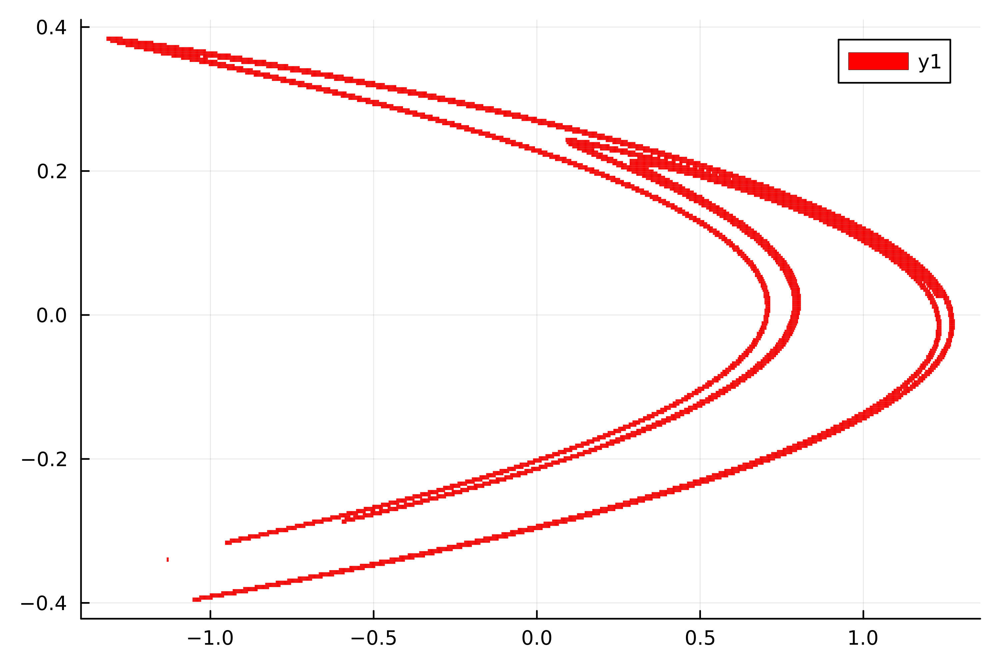
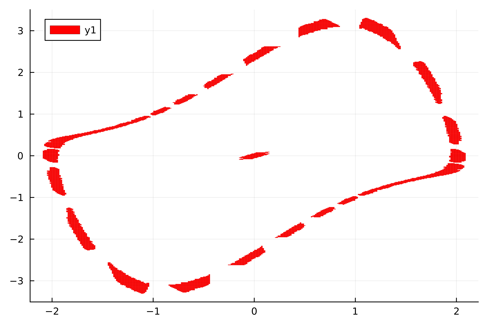

Recurrent Set
Mathematical Background
The (chain) recurrent set over $Q$ $R_Q$ is defined as the set of all $x_0 \in Q$ such that for every $\epsilon > 0$ there exists a set
\[\left\{ x_0,\, x_1,\, x_2,\, \ldots,\, x_{n-1} \right\} \subset Q \quad \text{with} \quad \| f(x_{i \, \text{mod} \, n}) - x_{i+1 \, \text{mod} \, n} \| < \epsilon \,\ \text{for all} \,\ i\]
The recurrent set describes "arbitrarily small perturbations" of periodic orbits. This definition is useful since our box coverings our finite and hence inherently slightly uncertain.
The idea for the algorithm is to construct a directed graph $G$ whose vertices are the box set $B$, and for which edges are drawn from $B_1$ to $B_2$ if $f(B_1) \cap B_2 \neq \emptyset$. This is referred to the transfer graph. We can now ask for a subset of the vertices, for which each vertex is part of a directed cycle. This set is equivalent to the strongly connected subset of $G$. We therefore perform two steps:
- subdivision step The box set
Bis subdivided once, i.e. every box is bisected along one axis, which gives rise to a new partition of the domain, with double the amount of boxes. This is saved inB. - graph construction step Generate the graph
G. This is done by generating the transition matrix overB(see the next algorithm) and noting the nonzero elements. This is the (transposed) adjacency matrix for the graphG. - selection step Find the strongly connected subset of
G. Discard all vertices (boxes) which are not part of a strongly connected component.
If we repeadetly refine the strongly connected box set through $k$ subdivision steps, then the algorithm converges to the recurrent set as $k \to \infty$ in the Hausdorff metric.
Example
using GAIO
# the Henon map
const a, b = 1.4, 0.3
f((x,y)) = (1 - a*x^2 + y, b*x)
cen, rad = (0, 0), (3, 3)
P = BoxGrid(Box(cen, rad))
F = BoxMap(f, P)
S = cover(P, :)
A = recurrent_set(F, S, steps = 22)
using Plots
p = plot(A);
Example
using GAIO
# Van der Pol system
const ϵ = 1.5
v((x,y)) = (y, ϵ*y*(1-x^2) - x)
# time-0.2 flow map
f(x) = rk4_flow_map(v, x)
c, r = (0., 0.), (3.5, 3.5)
Q = Box(c, r)
P = BoxGrid(Q)
S = cover(P, :)
F = BoxMap(f, Q)
C = recurrent_set(F, S, steps=18)
using Plots
p = plot(C);
We find an unstable manifold surroundng a fixed point as well as a stable periodic orbit.
Implementation
function recurrent_set(F::BoxMap, B₀::BoxSet{Box{N,T}}; steps=12) where {N,T}
# B₀ is a set of `N`-dimensional boxes
B = B₀
for k in 1:steps
B = subdivide(B, (k % N) + 1) # cycle through dimesions for subdivision
P = TransferOperator(F, B, B) # construct transfer matrix
G = MatrixNetwork(P) # view it as a graph
SCC = scomponents(G) # strongly connected components
B = BoxSet(morse_tiles(P, SCC)) # collect the nontrivial strongly connected components
end
return B
endGAIO.recurrent_set — Function
recurrent_set(F::BoxMap, B::BoxSet; subdivision=true, steps=subdivision ? 12 : 64) -> BoxSetCompute the (chain) recurrent set within the box set B.